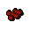
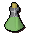
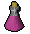
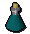
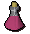
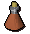
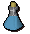
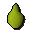

")
Herblore - The Potions
Introduction
Find out what potions you are able to make from the table below. Please remember that all stat boost potions give a temporary effect and your stats will reset over time.
| Note: | You must have completed the Druidic Ritual quest. | |
| Important: | The boosts that some potions can give are based upon your current levels. For example, if you have Attack level 1 and drink an Attack potion, your level will temporarily increase by 3. If your Attack level is 99, this boost will be by 12 levels. | |
| Also: | Each dose will add the same boost to the skills, and are not cumulative. For example, if you drink two doses of an Attack potion, you will not double the amount of Attack levels you temporarily gain. |
Potion |
Herblore Level Needed |
Primary Ingredient Needed |
Secondary Ingredient Needed |
Herblore Experience Gained |
Product Effect Per Dose |
![[image]](../../img/main/kbase/items/potions/other_potions/attack_potion.gif) Attack potion |
3 |
![[image]](../../img/main/kbase/items/primary_ingredients/guam2.gif) Guam |
![[image]](../../img/main/kbase/items/secondary_ingredients/eyeofnewt.gif) Eye of newt |
25 | 3-12 Attack boost |
![[image]](../../img/main/kbase/items/potions/other_potions/antipoison.gif) Anti-poison |
5 |
![[image]](../../img/main/kbase/items/primary_ingredients/marrentill2.gif) Marrentill |
![[image]](../../img/main/kbase/items/secondary_ingredients/groundunicornhorn.gif) Ground unicorn horn |
37.5 | Cures poison and gives a small amount of immunity |
![[image]](../../img/main/kbase/items/potions/other_potions/relicyms_balm.gif) Relicym's Balm Must have started Zogre Flesh Eaters before you can make this potion. |
8 |
![[image]](../../img/main/kbase/items/primary_ingredients/rogues_purse2.gif) Rogue's purse |
![[image]](../../img/main/kbase/items/secondary_ingredients/snake_weed2.gif) Snake weed |
40 | Cures disease |
![[image]](../../img/main/kbase/items/potions/other_potions/strength_potion.gif) Strength potion |
12 |
![[image]](../../img/main/kbase/items/primary_ingredients/tarromin2.gif) Tarromin |
![[image]](../../img/main/kbase/items/offspring/limpwurt.gif) Limpwurt root |
50 | 3-12 Strength boost |
![[image]](../../img/main/kbase/items/potions/other_potions/statrestore_potion.gif) Stat restore potion |
22 |
![[image]](../../img/main/kbase/items/primary_ingredients/harralander2.gif) Harralander |
 Red spiders' eggs |
62.5 | 10-39 restore on Defence, Attack, Strength, Magic and Ranged |
![[image]](../../img/main/kbase/items/potions/other_potions/guthix_balance.gif) Guthix Balance potion† |
22 |
Harralander |
![[image]](../../img/main/kbase/items/misc/garlic.gif) ![[image]](../../img/main/kbase/items/misc/silver_dust.gif) Red spiders' eggs, garlic, silver dust |
112 | Use on vampyres held with the Retainer to kill them, cure them, or make them angry! |
![[image]](../../img/main/kbase/items/potions/other_potions/blamish_oil.gif) Blamish oil |
25 |
Harralander |
![[image]](../../img/main/kbase/items/secondary_ingredients/blamish_snail_slime.gif) Blamish snail slime |
80 | Used on fishing rod to make an oily rod for catching lava eels |
![[image]](../../img/main/kbase/items/potions/other_potions/energy_pot.gif) Energy potion |
26 |
Harralander |
![[image]](../../img/main/kbase/items/food/other/chocolate_dust.gif) Chocolate dust |
67.5 | Restores energy by 20% |
![[image]](../../img/main/kbase/items/potions/other_potions/defense_potion.gif) Defence potion |
30 |
![[image]](../../img/main/kbase/items/primary_ingredients/ranarr2.gif) Ranarr |
![[image]](../../img/main/kbase/items/secondary_ingredients/whiteberries.gif) White berries |
75 | 3-12 Defence boost |
![[image]](../../img/main/kbase/items/potions/other_potions/super_fishing_potion.gif) Super fishing explosive (Requires Kennith's Concerns) |
31 |
Guam |
![[image]](../../img/main/kbase/items/secondary_ingredients/rubium.gif) Rubium |
55 | Lures mogres and causes 15 damage to them |
![[image]](../../img/main/kbase/items/potions/other_potions/agility_pot.gif) Agility potion |
34 |
![[image]](../../img/main/kbase/items/primary_ingredients/toadflax2.gif) Toadflax |
![[image]](../../img/main/kbase/items/secondary_ingredients/toadleg.gif) Toad legs |
80 | +3 Agility levels |
|  Combat potion |
36 |
Harralander |
![[image]](../../img/main/kbase/items/secondary_ingredients/goats_horn_dust.gif) Ground goat's horn |
84 | +3-12 Strength and Attack levels |
![[image]](../../img/main/kbase/items/potions/other_potions/prayerrestore_potion.gif) Prayer restore potion |
38 |
Ranarr |
![[image]](../../img/main/kbase/items/secondary_ingredients/snapegrass.gif) Snape grass |
87.5 | Restores 7-31 points of Prayer power (7-33 when carrying a blessed wrench) |
![[image]](../../img/main/kbase/skills/summoning/items/summoning_potion.gif) Summoning potion |
40 |
![[image]](../../img/main/kbase/skills/summoning/items/spirit_weed.gif) Spirit weed |
![[image]](../../img/main/kbase/skills/summoning/items/cockatrice_egg.gif) Cockatrice egg |
92 | Restores 7-31 Summoning points |
![[image]](../../img/main/kbase/items/potions/other_potions/crafting_potion.gif) Crafting potion |
42 |
![[image]](../../img/main/kbase/items/primary_ingredients/wergali.gif) Wergali |
![[image]](../../img/main/kbase/items/secondary_ingredients/frog_spawn.gif) Frog spawn |
95 | Raises Crafting level by 3 temporarily |
![[image]](../../img/main/kbase/items/potions/other_potions/superattack_potion.gif) Super attack potion |
45 |
![[image]](../../img/main/kbase/items/primary_ingredients/irit2.gif) Irit |
Eye of newt |
100 | 5-19 Attack boost |
![[image]](../../img/main/kbase/items/potions/poison/superantipoison-potion.gif) Super anti-poison |
48 |
Irit |
Ground unicorn horn |
106.3 | Cures and gives temporary immunity to poison |
![[image]](../../img/main/kbase/items/potions/other_potions/fishing_potion.gif) Fishing potion |
50 |
![[image]](../../img/main/kbase/items/primary_ingredients/avantoe2.gif) Avantoe |
Snape grass |
112.5 | +3 Fishing levels |
|  Super energy potion |
52 |
Avantoe |
![[image]](../../img/main/kbase/items/secondary_ingredients/mortmyremushroom.gif) Mort Myre fungi |
117.5 | Restores Energy by 40% |
|  Hunter potion |
53 |
Avantoe |
Kebbit teeth dust |
120 | Raises Hunter level by 3 temporarily |
![[image]](../../img/main/kbase/items/potions/other_potions/superstrength_potion.gif) Super strength potion |
55 |
![[image]](../../img/main/kbase/items/primary_ingredients/kwuarm2.gif) Kwuarm |
Limpwurt root |
125 | 5-19 Strength boost |
![[image]](../../img/main/kbase/items/potions/other_potions/magicess.gif) Magic essence potion |
57 |
![[image]](../../img/main/kbase/items/secondary_ingredients/starflower.gif) Starflower |
![[image]](../../img/main/kbase/items/secondary_ingredients/gorak_claw_ash.gif) Ground gorak claw |
130 | +3 Magic boost |
![[image]](../../img/main/kbase/items/potions/other_potions/fletching_potion.gif) Fletching potion |
58 |
Wergali |
![[image]](../../img/main/kbase/items/secondary_ingredients/wimpy_feather.gif) Wimpy feather |
132 | Raises Fletching level by 3 temporarily |
![[image]](../../img/main/kbase/items/potions/poison/weapon_poison.gif) Weapon poison |
60 |
Kwuarm |
![[image]](../../img/main/kbase/items/secondary_ingredients/groundbluedragonscale.gif) Dragon scale dust |
137.5 | May use with appropriate weapon to inflict poison damage. Please refer to the Weapon Poison article |
|  Super restore potion |
63 |
![[image]](../../img/main/kbase/items/primary_ingredients/snapdragon2.gif) Snapdragon |
Red spiders' eggs |
142.5 | 8-32 restoration on all stats except Constitution |
![[image]](../../img/main/kbase/items/potions/other_potions/sanfew_serum.gif) Sanfew Serum |
65 |
Super restore potion |
![[image]](../../img/main/kbase/items/secondary_ingredients/sanfew_serum_recipe2.gif) Ground unicorn horn, snake weed, nail beast nails |
160 | Combined effect of super restore, cure disease and cure poison potions, though at lower potency than individual potions. Can be used as a weapon against nail beasts |
![[image]](../../img/main/kbase/items/potions/other_potions/superdefense_potion.gif) Super defence potion |
66 |
![[image]](../../img/main/kbase/items/primary_ingredients/cadantine2.gif) Cadantine |
White berries |
150 | 5-19 Defence boost |
![[image]](../../img/main/kbase/items/potions/poison/antidoteplus.gif) *Super anti-poison+ potion |
68 |
Toadflax |
![[image]](../../img/main/kbase/items/roots/yewroots.gif) Yew roots |
155 | Cures and gives longer immunity to poison |
![[image]](../../img/main/kbase/items/potions/other_potions/antidragonbreath_potion.gif) Anti fire-breath potion |
69 |
![[image]](../../img/main/kbase/items/primary_ingredients/lantadyme2.gif) Lantadyme |
Ground blue dragon scale |
157.5 | Grants a limited resistance to dragon fire |
![[image]](../../img/main/kbase/items/potions/other_potions/rangepotion.gif) Ranging potion Ranging potion |
72 |
![[image]](../../img/main/kbase/items/primary_ingredients/dwarfweed2.gif) Dwarf weed |
![[image]](../../img/main/kbase/items/secondary_ingredients/wineofzam.gif) Wine of Zamorak |
162.5 | 4-13 Ranged boost |
|  *Weapon poison+ |
73 |
![[image]](../../img/main/kbase/items/offspring/cactus_spine.gif) Cactus spine |
Red spiders' eggs |
165 | May use with appropriate weapon to inflict poison damage. Please refer to the Weapon Poison article |
|  Magic potion |
76 |
Lantadyme |
![[image]](../../img/main/kbase/items/secondary_ingredients/potato_cactus.gif) Potato cactus |
172.5 | 5 Magic levels |
![[image]](../../img/main/kbase/items/potions/other_potions/zamorak_potion.gif) Zamorak brew |
78 |
![[image]](../../img/main/kbase/items/primary_ingredients/torstol2.gif) Torstol |
![[image]](../../img/main/kbase/items/secondary_ingredients/janger.gif) Jangerberries |
175 | 2-13 Strength boost 2-21 Attack boost 2-9 Prayer restore 2-11 Defence drain 20-110 life points drain |
![[image]](../../img/main/kbase/items/potions/poison/antidoteplusplus.gif) *Anti-poison++ potion |
79 |
Irit |
![[image]](../../img/main/kbase/items/roots/magicroots.gif) Magic roots |
177.5 | Cures and gives longest immunity to poison (temporary) |
![[image]](../../img/main/kbase/items/potions/other_potions/saradomin_potion.gif) Saradomin Brew |
81 |
Toadflax |
![[image]](../../img/main/kbase/items/secondary_ingredients/crushed_bird_nest.gif) Crushed bird nest |
180 | 20-160 life points boost 2-21 Defence boost 2-9 Strength drain 2-9 Attack drain 2-9 Magic drain 2-9 Ranged drain |
![[image]](../../img/main/kbase/items/potions/other_potions/superstrength_weapon_poison.gif) *Weapon poison++ |
82 |
![[image]](../../img/main/kbase/items/secondary_ingredients/nightshade.gif) Nightshade |
![[image]](../../img/main/kbase/items/secondary_ingredients/poisonivyberries.gif) Poison ivy berries |
190 | May use with appropriate weapon to inflict poison damage. Please refer to the Weapon Poison article |
![[image]](../../img/main/kbase/items/potions/other_potions/recover_special.gif) ~Recover special |
84 |
Super energy potion |
 Papaya |
200 | Recovers one quarter of special attack bar. Can only be used once every 30 seconds. |
![[image]](../../img/main/kbase/items/potions/other_potions/super_antifire.gif) ~Super antifire |
85 |
Anti-firebreath potion |
![[image]](../../img/main/kbase/items/secondary_ingredients/phoenix_feather.gif) Phoenix feather | 210 | Provides complete protection from dragon fire (removing the need to wield an anti-dragonfire shield) |
![[image]](../../img/main/kbase/items/potions/other_potions/extreme_attack.gif) ~Extreme attack |
88 |
Super attack potion |
Avantoe | 220 | 5-26 Attack levels |
![[image]](../../img/main/kbase/items/potions/other_potions/extreme_strength.gif) ~Extreme strength |
89 |
Super strength potion |
Dwarf weed | 230 | 5-26 Strength levels |
![[image]](../../img/main/kbase/items/potions/other_potions/extreme_defence.gif) ~Extreme defence |
90 |
Super defence potion |
Lantadyme | 240 | 5-26 Defence levels |
![[image]](../../img/main/kbase/items/potions/other_potions/extreme_magic.gif) ~Extreme magic |
91 |
Magic potion |
![[image]](../../img/main/kbase/items/secondary_ingredients/ground_mudrunes.gif) Ground mud runes | 250 | 7 Magic levels |
![[image]](../../img/main/kbase/items/potions/other_potions/extreme_ranging.gif) ~Extreme ranging |
92 |
Ranging potion |
![[image]](../../img/main/kbase/items/secondary_ingredients/grenwall_spikes.gif) 5 Grenwall spikes | 260 | 4-23 Ranged levels |
![[image]](../../img/main/kbase/items/potions/other_potions/super_prayer.gif) ~Super prayer |
94 |
Prayer restore |
![[image]](../../img/main/kbase/items/secondary_ingredients/bonemeal.gif) Wyvern bonemeal | 270 | 7-41 Prayer points |
* Please note the items which have a star next to them require a vial of coconut milk, rather than a vial of water.
† You must have completed Darkness of Hallowvale to make Guthix balance potions.
~ These potions are untradable. They cannot be used in PvP Worlds and dangerous activities, but they can be used in player vs monster combat and safe activities. If you log in to a PvP World while under an extreme potion's effects, these effects will be reduced.
Overload
Those at the top of their Herblore game will be able to create the overload potion. Overload not only requires torstol, but five different potions:
- Extreme attack
- Extreme strength
- Extreme defence
- Extreme magic
- Extreme ranging
Potion |
Herblore Level Needed |
Primary Ingredient Needed |
Secondary Ingredient Needed |
Herblore Experience Gained |
Product Effect Per Dose |
![[image]](../../img/main/kbase/items/potions/other_potions/overload_potion.gif) Overload |
96 |
![[image]](../../img/main/kbase/items/potions/other_potions/potions.gif) Five different potions (see text above) |
Torstol |
1000 | See below |
Overload is so strong that it racks the body with spasms and burns the digestive tract, so be prepared for 500 damage in chunks of 100 when you drink it! You will regain these 500 life points when the stat effects wear off.
Overload gives you the stat effects and magic boosts of ALL five of its potion ingredients - extreme attack, extreme strength, extreme defence, extreme magic and extreme ranging - for a period of five minutes. Unlike the other extreme potions, which gradually return your stats to their normal level, overload will keep these bonuses at their boosted level for five minutes and will then reset them back to their original state (healing the 500 life points at the same time).
Overload is untradable. It cannot be used in PvP Worlds and dangerous activities, but it can be used in player vs monster combat and safe activities. If you log in to a PvP World while under overload's effects, these effects will be reduced.
Quest Potions
There are more quest potions available within the game than listed within this section of the manual, but you will need to uncover them while completing various quests within RuneScape.
Click here to view the Herblore FAQs

More articles in
Herblore (Members Only)
|
|
|
Further Help
If this article does not help you, you may find the following sections of the RuneScape site helpful:
|
|